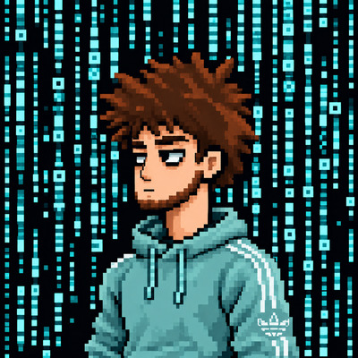

Lo demás no es mi problema. Tecnología, caos y poca fe en la humanidad, en vídeos cortos. Un personaje de píxeles con proyectos de verdad: todo lo que sale en los vídeos existe y puedes usarlo.
Una GitHub Action que comenta en tu PR una excusa a medida cuando falla el CI, y lo cierra como "no reproducible".
Repo con la Action, 57 excusas en 8 categorías y la demo. Pull requests con más humor negro, bienvenidas.
Diario de outfits que recuerda qué te pusiste cuando hacía el mismo tiempo. Una PWA que hice para mi hermana: primera versión en 10 minutos, bonita en 40.
Cada Short sale de un proyecto real o de una mala decisión técnica. Normalmente ambas.
Cargando una mentira convincente...